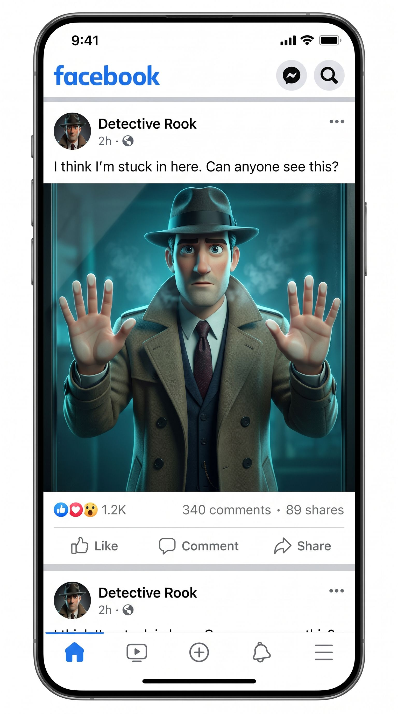
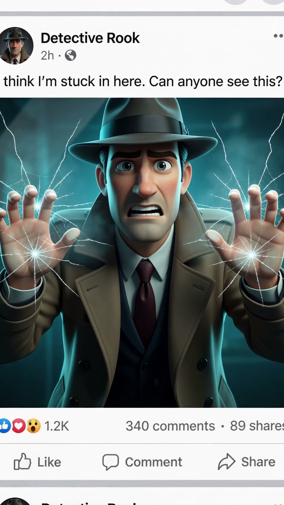

1 descriptive image → contained beat → frame+pose chain → breakout beat → stitched 10s. Seedance 2.0, 2 clips × 5s.


Judge: Does the Facebook post read as real? Does he stay the same person? Does the chain make the break continuous (clip-2 starts exactly on clip-1's cracked-glass pose)? If yes → this POST_SPEC pattern becomes every effect.